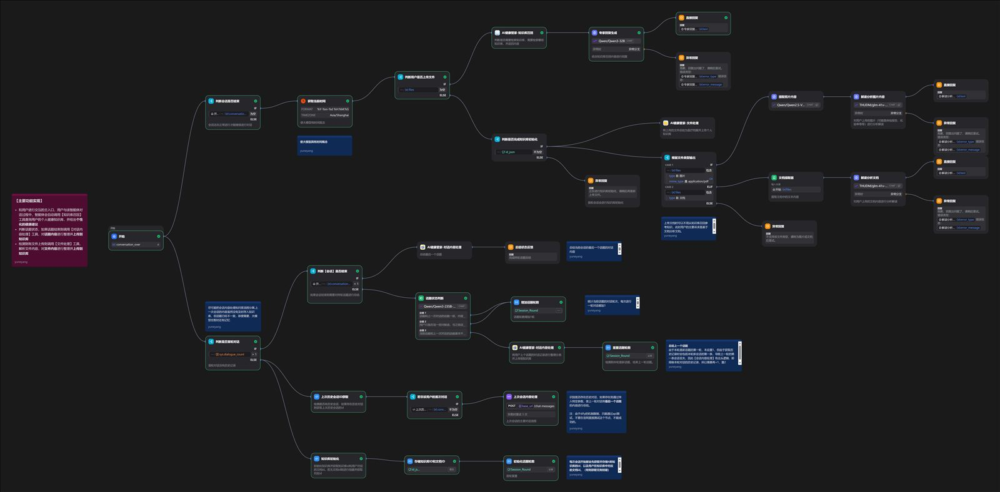
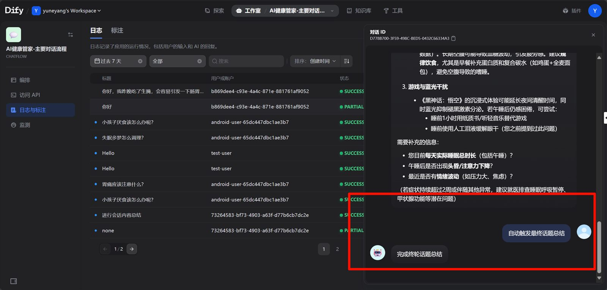
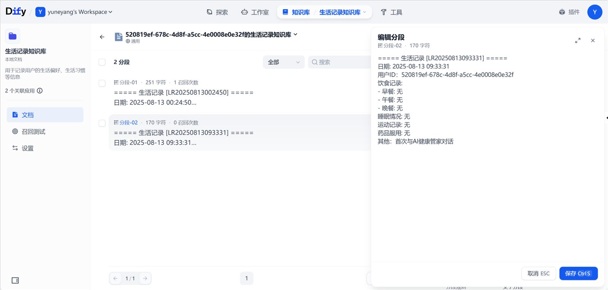
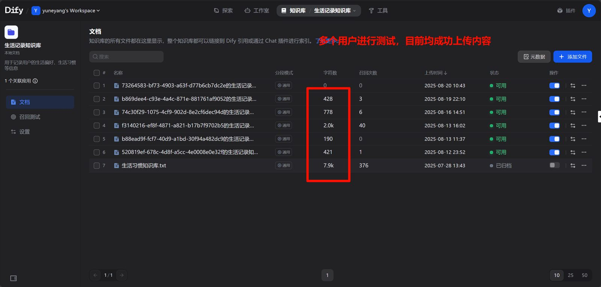

广东延康科技有限公司技术部 · AI 应用开发实习（2025.01 – 2025.09）。 基于 Dify 搭建健康咨询智能体：3 个 Sub-Agent 集成 Main Agent，对话中自动沉淀结构化健康档案， 通过针对性 RAG 检索提供个性化健康咨询，并负责本地大模型部署与端侧智能体封装。
搭建了 3 个 Sub-Agent（文件处理 / 自动对话总结 / 个人健康档案检索）并集成到一个 Main Agent，实现：
工作流基于 Dify 图形化搭建，本质逻辑与 LangChain 一致；同时负责将智能体接入后端，已在微信小程序和公司 APP 上跑通。



